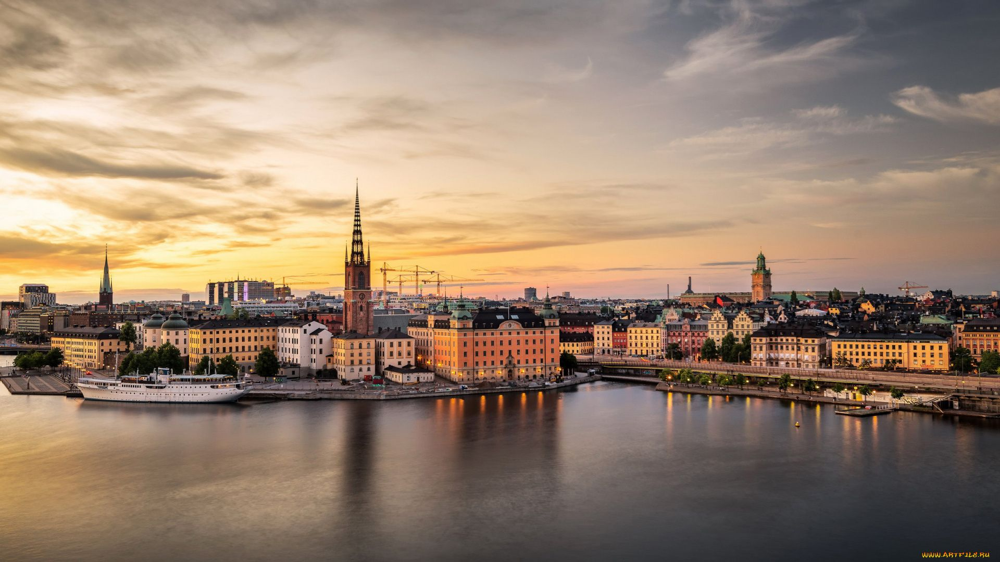
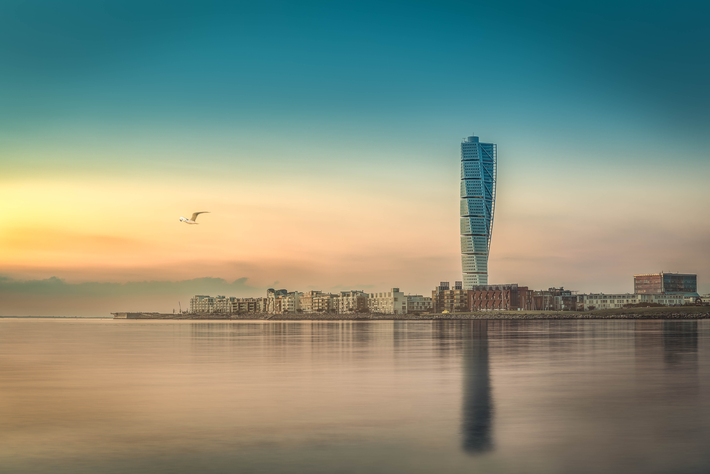
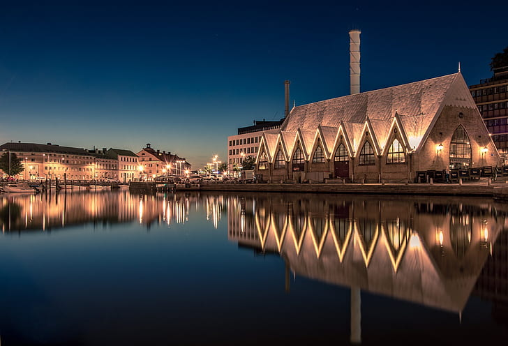
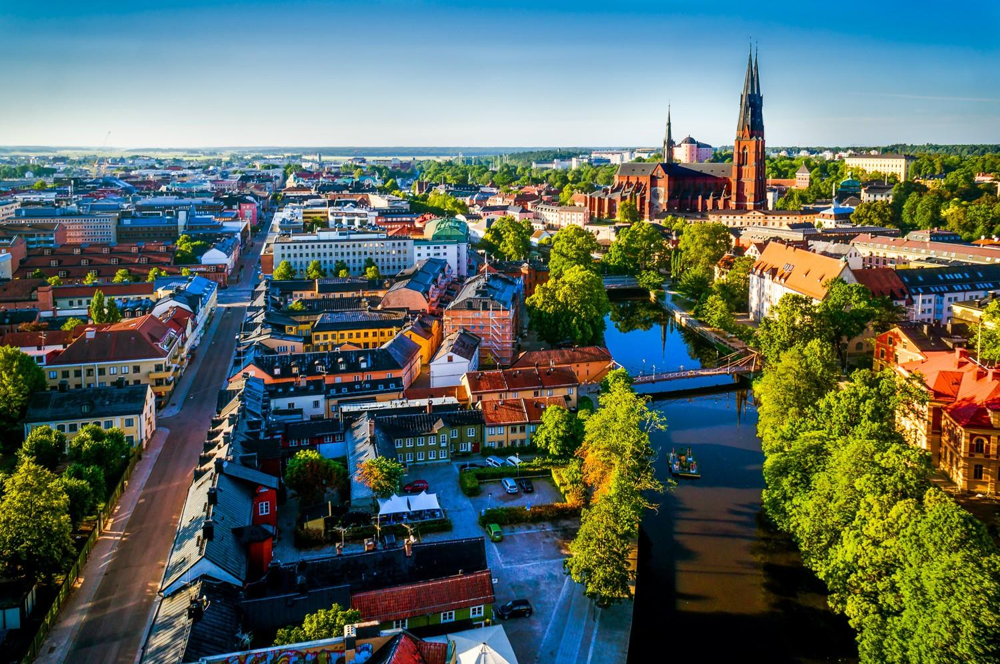
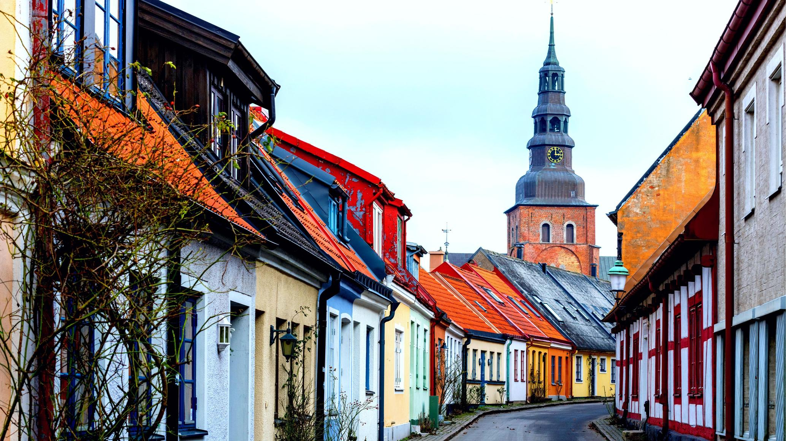
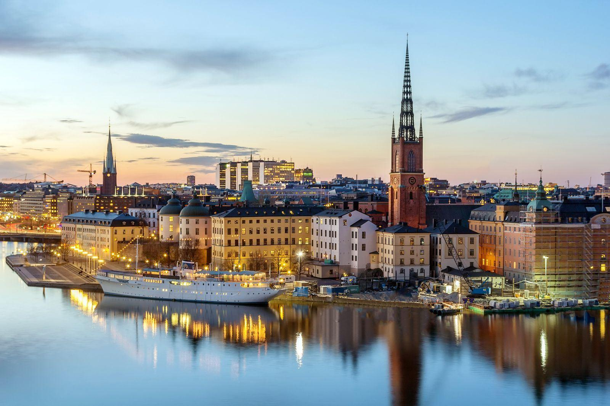

DESPRE SUEDIA
Suedia este renumită în întreaga lume pentru o mulțime de lucruri: automobile Saab și Volvo, grupul de muzică ABBA, heringul murat și megamagazinul de bricolaj IKEA. Este la fel de renumit pentru peisajele sale uimitoare, satele pitorești de pescari, fiind țara renilor și a soarelui nesfârșit de vară.
Suedia este plină de clădiri colorate din lemn, colibe tradiționale, fortărețe de piatră, catedrale și o arhitectură contemporană destul de inovatoare. Fie că sunteți în căutarea de trasee de drumeții sau de muzee de artă, Suedia le are.
O prezentare generală a celor mai bune locuri de vizitat în Suedia:
1. MALMÖ

Ceva vechi, ceva nou este poate cel mai bun mod de a descrie Malmö, un oraș istoric medieval cu un peisaj împânzit cu clădiri moderne, contemporane. Al treilea oraș ca mărime al Suediei are un oraș vechi minunat (Gamla Stoden) cu trei piețe principale: Stortoget, Lilla Torg și Gustav Adolfs Torg.
Orașul vechi este și locul unde veți găsi castelul Malmohus Slott. Acest oraș multicultural, cu 150 de etnii, este legat prin Podul Oresund de Danemarca. O atracție „nouă” care trebuie văzută este Turning Torso, o capodoperă arhitecturală care se răsucește la peste 190 de metri (600 de picioare) spre cer, făcând-o cea mai discutată clădire din Suedia.
2. GÖTEBORG

Göteborg, situat pe coasta de vest a Suediei, este un oraș verde presărat cu numeroase parcuri de toate dimensiunile. Multe dintre parcuri datează din secolul al XIX-lea, inclusiv Kungsparken, un parc care înconjoară canalul din jurul centrului orașului. Dacă sunteți mai interesați de parcuri de distracții, mergeți la Liseberg, care are mai multe trasee decât orice parc de distracții în Scandinavia. Cel mai mare oraș-port din Scandinavia, Göteborg se mândrește și cu cel mai mare festival de film din regiune, precum și cu numeroase festivaluri de muzică pe tot parcursul anului.
Vă este foame? Încercați un haga bulle, un rulou mare de scorțișoară la Haga, un cartier cunoscut pentru casele sale pitorești din lemn.
3. UPPSALA

Uppsala, situat la 70 km (44 mile) nord de Stockholm, este centrul religios al Suediei, și a fost încă din secolul al XII-lea. Înainte de creștinism, Uppsala era cunoscută pentru cinstirea zeilor nordici. Catedrala din Uppsala, sediul arhiepiscopului Suediei, este cea mai mare catedrală din Scandinavia. Educația este importantă și aici, cu Universitatea Uppsala, care a fost fondată în 1477, făcând-o unul dintre cele mai vechi colegii din Scandinavia.
Râul Fyris trece prin oraș, cu secțiunea medievală situată la vest de râu. Atât catedrala, cât și castelul Uppsala domină orizontul aici. Botanistul din secolul al XVIII-lea, Carl Linnaeus a locuit în Uppsala, așa că vizitați grădina botanică de lângă castel.
4. YSTAD

Ystad, un oraș de coastă din sudul Suediei, va atrage cu siguranță detectivii și fanii ai misterului. Renumitul autor Henning Mankell și-a stabilit romanele polițiste, cu Kurt Wallender, în Ystad și în împrejurimi. Clădirile remarcabile pe care le veți găsi folosite în cărțile sale includ Greyfriars Abbey, una dintre cele mai bine conservate mănăstiri medievale din Suedia și Biserica Fecioarei Maria, o mare biserică medievală; ambele sunt exemple remarcabile de arhitectură gotică Hansa. Un tur de mers pe jos pe străzile pietruite vă va duce, de asemenea, pe lângă clădirile pitorești pe jumătate din lemn, în culori pastelate.
Este necesară și o plimbare pe plajele frumoase cu nisip ale orașului. La est de Ystad se află monumentul megalitic Ales Stenar, format din 59 de bolovani mari care formează o navă de piatră.
5. STOCKHOLM

Stockholm, un oraș frumos așezat pe 14 insule, are multe de oferit ca capitală a Suediei și cel mai mare oraș din Scandinavia. Fondat în secolul al XIII-lea, Stockholm este locul în care se acordă anual premiile Nobel.
Muzeul Vasa, dedicat unei nave de război din secolul al XVII-lea care s-a scufundat în călătoria sa inaugurală, este cel mai vizitat muzeu din Scandinavia.
Stockholm este mai ușor pentru buget decât alte orașe nordice, oferind intrare gratuită la 15 muzee, inclusiv Istoria Suediei, Muzeul Medieval, Armeria Regală și Castelul Skokloster. De asemenea, nu veți dori să ratați Palatul Regal, Muzeul de Artă Modernă și Primăria.
Cel mai mare și capitala Suediei, Stockholm este admirat ca fiind una dintre cele mai frumoase capitale ale Scandinaviei. Situată în sud-estul Suediei, capitala se întinde pe zeci de insule și insulițe stâncoase care sunt toate conectate prin poduri vechi fermecătoare și drumuri moderne. Parcurile verzi luxuriante, atracțiile de talie mondială și un amestec de arhitectură istorică și modernă, fac din Stockholm o destinație turistică atrăgătoare.
Printre atracțiile care trebuie văzute în Stockholm, se numără centrul medieval bine conservat al orașului, cu frumoasele sale biserici vechi, palatul regal, poduri pitorești, canale și străzi pietruite mărginite de cafenele și magazine. Insula verde luxuriantă Djurgården găzduiește unele dintre cele mai populare atracții turistice din Stockholm, cum ar fi parcul tematic Gröna Lund, Grădina Zoologică din Stockholm și Muzeul în aer liber Skansen. O necesitate este să priviți orașul din vârful celei mai mari clădiri rotunde din lume, Ericcson Globe.